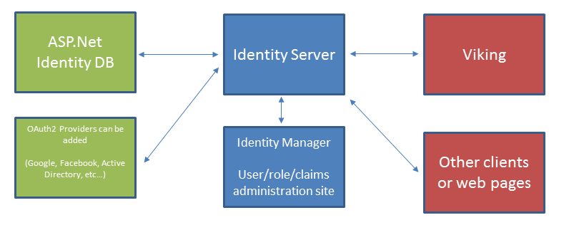

Identity Service¶
Viking uses the Apache licensed Identity Manager and Identity Server projects to manage users, roles, and claims.
{kind=link}
Setup¶
- IIS must be configured to use SSL. Identity Server requires the use of SSL.
- Make sure the Identity Server is running in an application pool with access rights to the identity database.
- When the Identity Server first runs it will create the database if it is missing. If the identity server IIS application does not have sufficient permissions to create tables in the database it will fail.
- The default admin account in Identity Server is “admin” with password “administrator”.
- Identity Server maps two sub domains,
- /ids - The identity server. Connect here to authenticate users. /idm - The identity manager. Connect here to manage users.
Configuration¶
- Application settings
- AuthorityUri - The Uri of the identity service. Example: https://localhost:8080/IdentityDebug/ids
- RedirectUri - The Uri to use when authenticating clients for implicit flow. Example: https://localhost:8080/IdentityDebug/idm
- IdentityManagerUri - The Uri of the identity manager. Example: https://localhost:8080/IdentityDebug/idm
- X509SerialNumber - The serial number of the certificate we should sign our tokens with from the machine’s root store. Application identity must have sufficient rights to read the private key.
- EmbeddedX509Password - If Identity server is compiled to embed the certificate this is the password to open the embedded certificate
- VikingClientSecret - Client secret we expect for Authorization code flow from the Viking client. The client must send this secret, hashed with SHA256, to interact with Identity Server.
- Connection strings
- IdentityDB - Connects to the SQL database containing users and roles. These are created if they do not exist.
- AspId - Connects to the SQL database containing the ASP.NET ID tables. These are created if they do not exist.
Troubleshooting¶
- Make sure the application identity the Identity Server is running under has permission to access the private key. Otherwise this exception is thrown internally.::
Exception:Thrown: “IDX10614: AsymmetricSecurityKey.GetSignatureFormater( ‘http://www.w3.org/2001/04/xmldsig-more#rsa-sha256’ ) threw an exception. Key: ‘System.IdentityModel.Tokens.X509AsymmetricSecurityKey’ SignatureAlgorithm: ‘http://www.w3.org/2001/04/xmldsig-more#rsa-sha256’, check to make sure the SignatureAlgorithm is supported. Exception:’System.Security.Cryptography.CryptographicException: Keyset does not exist